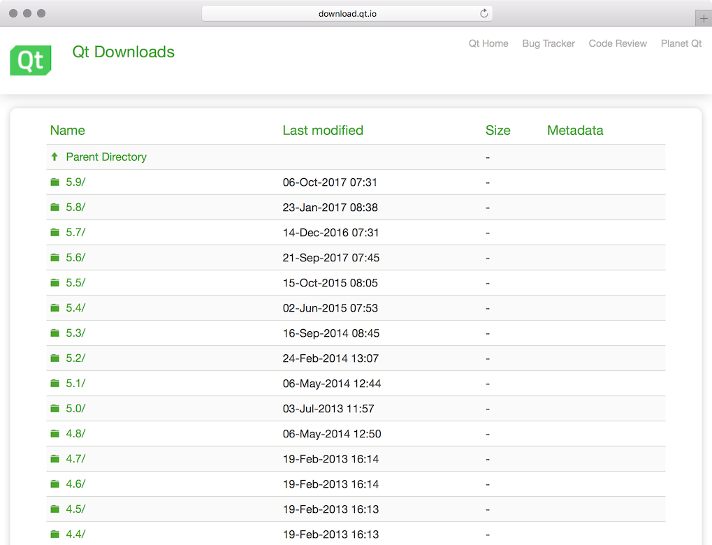

对于想学习 Qt 的同学来说，下载、安装 Qt 还真不是一件容易的事，但这也是学习 Qt 的基石，否则连个 Qt Hello World 都不能在电脑上编写，还玩什么呢？
下载
下载 Qt，首先想到的是到官网 https://www.qt.io 下载，悲催的是，别说对于新手，就算对于我这种业余爱好 Qt 好多年的伪骨灰，进去后都是懵逼状态，别说还要注册、登录，估计连找下载的地方都困难，大多数人在这估计就有放弃的想法了，不能从大门进，还不能直捣黄龙么，访问 http://download.qt.io/archive/qt/ 就可以无障碍的挑选想要的 Qt 版本了。

Qt 5.9 后 Windows 的 Qt 下载没有那么多选择了，VS，MinGW，Android 等都全放到一个安装包里了，安装时选择要安装的模块
Qt 5.9 前 Windows 中各中用途的安装包是分开的
版本选择
知道怎么下载 Qt 了，但是有这么多版本，哪一个才适合我们呢？
如无特殊需求或者新入门，Windows 下推荐使用 MinGW 版的，Linux 和 Mac 就比较简单，没啥好说的，当有一定经验后，也就有了自己的判断，无须他人过多说什么，开心就好。
VS 版的 Qt 很多人都会遇到中文乱码问题，还没能力解决，MinGW 版的 Qt 中就不会这么烦心。
以下提供一些建议，仅为参考:
用于学习，推荐用最新版本
项目中推荐 LTS 版本，Qt 5.6 和 Qt 5.9 都是 LTS 的
LTS: Long Term Support 长期支持版本
Windows 中是 MinGW 还是 VS？如果开发的内容需要调用 Windows API，推荐 VS 版的，否则推荐 MinGW 版
在 XP 上使用，最高支持的版本是 Qt 5.7.1，但奇葩的是 Qt 5.6 竟然不支持 XP，注意一下就可以了(不要问我为什么还有 XP，去机关、学校看看就明白了)
安装
安装嘛，不就是双击后下一步下一步么，注意一下下面几点即可:
- Windows: 从 Qt 5.9 开始，选择 VS 还是 MinGW 是在安装时选择，而不是在下载时
- 使用 VS 版的 Qt: 先安装 VS，然后再安装 Qt
- 使用 MinGW 版 Qt: 不需要单独安装 MinGW，安装包中已经自带，安装时选中即可
- Mac: 先安装好 Xcode，然后再安装 Qt
- Linux: 自己玩吧
下图是安装 Qt 5.9.2 的界面，能够自由的选择要安装的模块，虽然灵活，但是对于初学者来说却是个障碍，新手不防参考下面的选择进行安装
IDE
开发 Qt 有 2 个主流的 IDE: VS 和 Qt Creator，我个人更喜欢 Qt Creator，因为在 Qt Creator 中可以写代码，搜索、查看帮助文档，使用 UI Designer 等
VS？不熟，感兴趣的同学自己去了解吧！